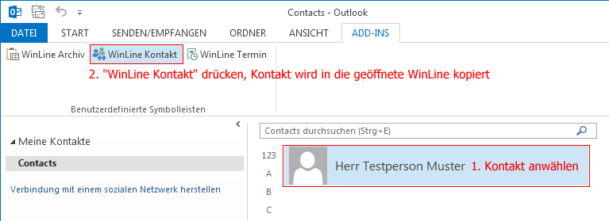
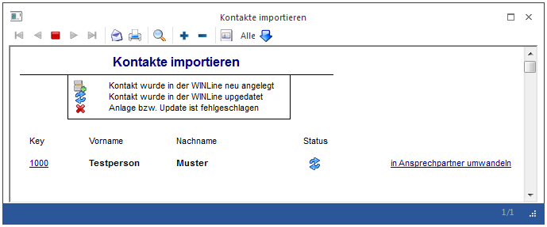

In Outlook hinterlegte Kontakte können über das Add-In "WinLine Kontakt" problemlos in die WinLine übergeben werden.
Hierzu muss die WinLine gestartet sein und der ausgewählte Kontakt in Outlook ausgewählt und über das Add-In "WinLine Kontakt" übertragen werden.
Wenn es sich um einen neuen Kontakt handelt, wird dieser im Kontaktestamm neu angelegt. Falls jedoch Informationen aktualisiert oder geändert werden, wird durch den Import der Kontakt im Kontaktestamm aktualisiert.
